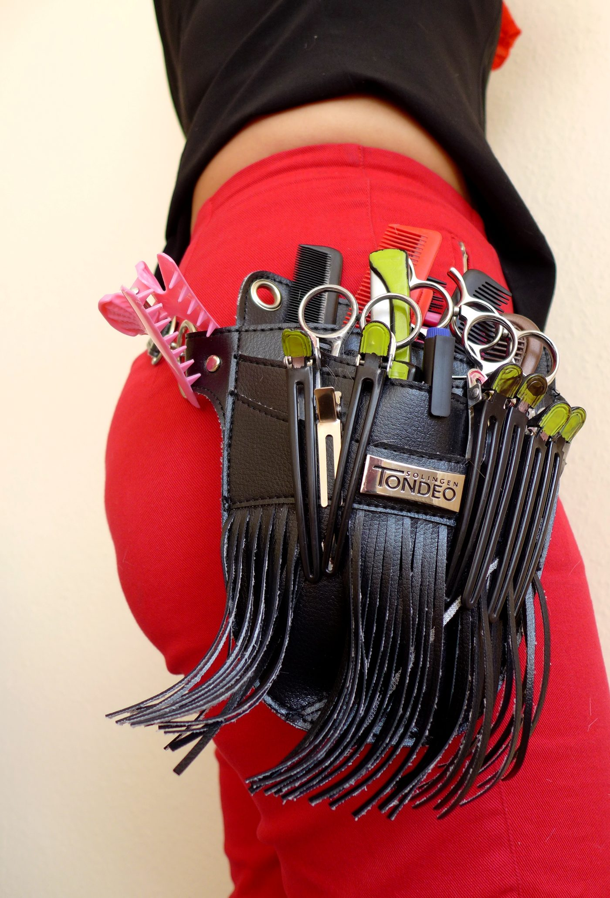
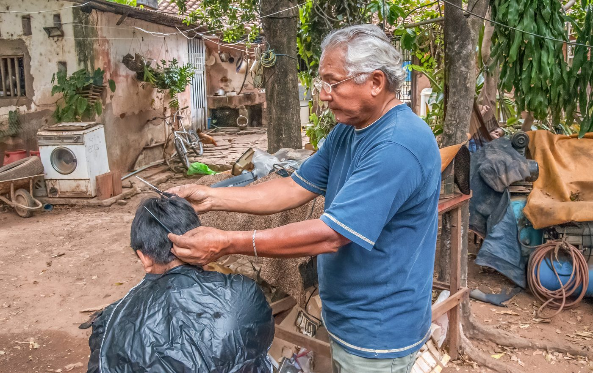

Plan de route
-
Séance 1 · The Consultation
55 min
Accueillir un client, poser les questions de la fiche de consultation, et s’entraîner au jeu de rôle. Le lexique de la coupe se trouve aussi dans cette séance.
Point d’arrêt possible. On s’arrête après le jeu de rôle sur la fiche. La fois suivante, on reprend au lexique de la coupe, puis à l’écoute.
-
Écoute · a cut in a London salon
15 min
Repérer le lexique dans la vidéo de Tom Warr et répondre aux cinq questions.
Sortie de secours. Si la vidéo ne passe pas, on travaille seulement le lexique de la coupe, déjà sur la page.
-
Séance 2 · The Exam Rubric
55 min
Lire les critères du jury, s’évaluer et donner un retour en anglais.
Point d’arrêt possible. On s’arrête après le travail sur la grille. La fois suivante, on ouvre la séance 3, le tableau des oxydants.
-
Séance 3 · The Chemical Chart
55 min
Choisir l’oxydant, justifier le choix, et donner les consignes de sécurité.
Point d’arrêt possible. On s’arrête une fois le tableau compris et les consignes dites. La fois suivante, on passe aux questions du jury.
Sortie de secours. S’il reste peu de temps, on garde trois oxydants et une consigne de sécurité, et on laisse le reste pour la fois suivante.
-
Séance 4 · The Jury’s Tricky Questions
50 min
Comprendre les questions du jury et y répondre avec une raison.
Point d’arrêt possible. On s’arrête après le travail des questions. La fois suivante, on enchaîne sur la simulation d’examen.
-
Séance 5 · Exam Simulation
50 min
Présenter son travail et répondre au jury, puis remplir la grille d’oral A2.
Sortie de secours. Si le temps manque pour une simulation complète, chaque élève prépare une présentation courte et on utilise seulement la grille d’oral.
Session 1: The Consultation
Welcome a client, ask the right questions and fill in the consultation form.
Recap · 5 minutes
First look: the painting at the top of the page.
- Who painted it, and when?
- Where are we?
- How does the little girl feel?
Answer key
- Norman Rockwell, in 1972.
- In a hair salon (a beauty shop).
- She is amazed, surprised and a little proud: it is her first visit.
Describe the painting 15 min
- This is a painting by… It was painted in…
- In the foreground, I can see… In the background, there is…
- The hairdressers are holding…
- The little girl looks… because…
- Her mother is wearing…
In pairs: one student describes, the other closes their eyes and listens, then says one thing that was missing.
Answer key
Possible answer: This is a painting by Norman Rockwell, from 1972. We are in a hair salon. In the foreground, a little girl is sitting in a salon chair, in a white gown. She is looking at herself in the mirror and she looks amazed. Two hairdressers are lifting her hair with black combs. On the right, her mother is wearing a dark blue coat; she is holding a red coat and a straw hat. It is the girl’s first trip to the beauty shop.
Expanding your vocabulary: the consultation form 10 min
| English | En français |
|---|---|
| hair texture | la nature, l’épaisseur du cheveu |
| fine · medium · thick | fins · normaux · épais |
| hair pattern | la forme du cheveu |
| straight · wavy · curly · coily | raides · ondulés · bouclés · crépus |
| scalp condition | l’état du cuir chevelu |
| normal · dry · oily | normal · sec · gras |
| sensitive · dandruff | sensible · les pellicules |
| the desired service | la prestation souhaitée |
| a graduated bob | un carré dégradé |
| highlights | des mèches (éclaircies) |
Say each word after your teacher, then test your partner: one says the French word, the other answers in English.
The Consultation Form 10 min
| Consultation Form | |
|---|---|
| Client’s name or model name | .............................. |
| Hair texture | Fine · Medium · Thick |
| Hair pattern | Straight · Wavy · Curly or coily |
| Scalp condition | Normal · Dry · Oily · Sensitive or dandruff |
| Desired service | .............................. (e.g. a graduated bob with highlights) |
Fill it in at the start of the exam, on paper or in your head.
Useful questions
What’s your name, please? · What can I do for you today? · Is your scalp sensitive? · Do you have any dandruff? · How would you like your hair? · Would you like some highlights?
Speaking: the consultation role-play 15 min
In pairs. Student A is the hairdresser, student B is the client. B picks a client card. A asks the questions and fills in the form. Then swap.
| Client card | Hair | Wish |
|---|---|---|
| Emma | fine, straight, oily scalp | a graduated bob |
| Mr Jones | thick, wavy, dry scalp, a little dandruff | a short cut |
| Aisha | medium, coily, sensitive scalp | a trim and a blow-dry |
| Mrs Smith | medium, straight, normal scalp, about 50% grey | grey coverage |
- Good morning, welcome to the salon. Please take a seat.
- Let me look at your hair. Your hair is quite fine.
- Your scalp is a little oily. Is it sensitive?
- So, you would like a graduated bob. Is that right?
- Perfect. Let’s start with a shampoo.
Answer key
Model dialogue (Emma): Good morning, welcome to the salon. What’s your name, please? Emma. Nice to meet you, Emma. What can I do for you today? I’d like a graduated bob. Let me look at your hair: it is fine and straight. Is your scalp sensitive? No, but it gets oily quickly. OK, I’ll use a shampoo for oily hair. So, a graduated bob. Is that right? Yes, perfect.
Homework
Learn the vocabulary of the form. Then record a voice message of 30 seconds: you are the hairdresser and you describe one client from the cards (name, hair texture, hair pattern, scalp, service).
Expanding your vocabulary: the cut

| English | Français |
|---|---|
| fringe | frange |
| curtain fringe | frange rideau |
| bangs (US) | frange |
| layers / layering | dégradé, étages |
| face framing | effilage autour du visage |
| section | mèche, section |
| comb | peigne |
| scissors | ciseaux |
| clip | pince, pince à cheveux |
| blow-dry | brushing |
| parting | raie |
| trim | couper les pointes, égaliser |
| highlights | mèches, balayage |
| bleach | décoloration, décolorer |
| toner | tonifiant, bain de couleur |
Listening: a cut in a London salon
Watch a short tutorial, tick the key words, and answer five questions. About 15 minutes.
Tom Warr, Academy Director at Blue Tit London (Forest Hill and Dalston), shows how to cut a full fringe and the face-framing layers of a soft shag. The film lasts a little over three minutes. In American English he says bangs; in Britain we say fringe. A curtain fringe is a longer, parted fringe that frames the face; here the face-framing layers sit around the face in a similar way.

Video: Tom Warr, « How to cut your bangs and face framing for your shags », Blue Tit London, YouTube. Watch on YouTube · Blue Tit London · Tom Warr on Instagram
Key words to spot
Tick the words you hear:
- fringe
- bangs
- layers (or layering)
- cut
- section
- comb
- scissors
- eyebrows
Questions
- What is the main focus of Tom's tutorial?
- What angle does he use to cut the square layered fringe?
- Why does he leave the fringe a little longer when the hair is still wet?
- The face-framing section goes from where to where?
- When the hair is dry, he cuts through the comb. Where does he want the fringe to sit?
Answer key
Words you hear: fringe, bangs, layers / layering, cut, section, comb, eyebrows. He does not say scissors; he talks about point cutting and cutting through the comb.
- The full fringe and the face framing (for a soft shag).
- 90 degrees.
- To give some room for it to jump up when it is dry.
- From the middle of the fringe down to just in front of the ear.
- On the eyebrows.
Session 2: The Exam Rubric
Understand the jury’s criteria, assess your work and give feedback in English.

Recap · 5 minutes
Last session: the consultation.
- Give the three words for hair texture.
- How do you say « les pellicules » in English?
- Ask a client what service she wants.
Answer key
- fine, medium, thick
- dandruff
- What can I do for you today? or How would you like your hair?
Expanding your vocabulary: in the training room 10 min
| English | En français |
|---|---|
| a training head | une tête malléable |
| posture | la posture |
| to disinfect the tools | désinfecter les outils |
| a tangled cord | un fil emmêlé |
| a section · to section | une section · séparer, sectionner |
| a parting | une raie, une séparation |
| a clip | une pince |
| a guide section | une mèche témoin |
| tension | la tension |
| elevation angle | l’angle d’élévation |
| a blow-dry | un brushing |
| a kink | un faux pli |
| symmetry | la symétrie |
The Exam Rubric 15 min
Use this rubric to assess yourself when you practise on a training head. Each criterion is marked out of 10.
| Criterion | Key points | Mark |
|---|---|---|
| 1. Ergonomics and safety | Upright posture, back protected, tools disinfected, no tangled cords on the floor. | .../10 |
| 2. Sectioning precision | Clean partings, clips well placed, guide section easy to find. | .../10 |
| 3. Technique and execution | Even tension, elevation angles respected (for example 90° for layering). | .../10 |
| 4. Finishing and styling | Glossy blow-dry, no kinks, perfect left and right symmetry. | .../10 |
| Total | Target for the CAP: at least 30 out of 40. | .../40 |
- Which criterion is about your body and your workstation?
- What must a guide section be?
- What angle is given for layering?
- What must the finish look like?
Answer key
- Criterion 1, ergonomics and safety.
- Easy to find (identifiable).
- 90 degrees.
- Glossy, with no kinks, symmetrical left and right.
Speaking: giving feedback 15 min
Written record · giving feedback
Positive: Well done! Your partings are very clean. · Your tension is even.
Advice: You should check your posture. · You shouldn’t leave the cord on the floor. · Try to place your clips higher.
Mark: I give you 8 out of 10 for…
In pairs, look at the four situations. Say one positive point or one piece of advice, and give a mark.
- Lina’s back is bent and her dryer cord is on the floor.
- Tom’s partings are clean and his clips are in the right place.
- Sara’s tension is uneven on the left side.
- Yanis’s blow-dry is glossy but the left side is longer than the right side.
Answer key
- You should stand up straight to protect your back. You shouldn’t leave the cord on the floor. 4 out of 10 for safety.
- Well done! Your partings are clean and your clips are well placed. 9 out of 10.
- Try to keep the same tension on both sides. 6 out of 10 for technique.
- Your blow-dry is glossy, well done. You should check the symmetry: the left side is longer. 7 out of 10.
Speaking: the jury corner 10 min
Groups of three: one student works on a training head (or mimes), one is the jury and fills in the rubric, one is the timekeeper. After three minutes, the jury gives feedback out loud with two sentences from the written record. Then swap roles.
Homework
Write your own feedback after your next practice: one positive sentence, one sentence with should, and your total out of 40.
Session 3: The Chemical Chart
Choose the right developer, explain why, and give safety instructions.
Recap · 5 minutes
Last session: the rubric.
- How many criteria are there? What is the total?
- How do you say « une mèche témoin »?
- Give one piece of advice with should.
Answer key
- Four criteria; the total is out of 40.
- a guide section
- For example: You should disinfect your tools.
Expanding your vocabulary: colour and safety 10 min
| English | En français |
|---|---|
| a developer | un oxydant |
| hydrogen peroxide | l’eau oxygénée (peroxyde d’hydrogène) |
| a volume (vol) | un volume |
| to lift · a level of lift | éclaircir · un ton d’éclaircissement |
| to deposit colour | foncer, déposer la couleur sans éclaircir |
| to tone | patiner |
| grey coverage | la couverture des cheveux blancs |
| a lightener | un produit décolorant |
| off the scalp | hors cuir chevelu (sur mèches) |
| gloves | des gants |
| a skin allergy test | un test d’allergie cutanée |
| to rinse | rincer |
The Chemical Chart 15 min
Never hesitate in front of the jury: know your developer volumes.
| Developer | Lift | What for? |
|---|---|---|
| 10 vol (3%) | 0 to 1 level | Depositing colour, toning, going darker. |
| 20 vol (6%) | 1 to 2 levels | Standard grey coverage; the usual choice on the scalp. |
| 30 vol (9%) | 2 to 3 levels | More lift, high-lift blondes. |
| 40 vol (12%) | 3 to 4 levels | Maximum lift. Use with caution, off the scalp only (for example on foils). |
Sources: Hair Colour for Hairstylists: Level 2, BCcampus Open Education, chapter 4.2; Redken colour charts. Always follow the manufacturer’s instructions.
- Which developer is the most common for grey coverage?
- You want to go darker. Which developer do you choose?
- Why must you be careful with 40 vol?
- How many levels can you lift with 30 vol?
Answer key
- 20 vol (6%).
- 10 vol (3%).
- It is the strongest developer: it can irritate or burn the scalp, so it is used off the scalp only.
- 2 to 3 levels.
Speaking: explain your choice 15 min
Written record · explaining a choice
I chose 20 vol because my model has grey hair. · I use 10 vol to tone the hair. · 40 vol is too strong for the scalp.
In pairs, one student reads a situation, the other chooses a developer and explains why. Then swap.
- Your client has about 50% grey hair.
- Your client wants a darker brown.
- Your client wants to be two or three shades lighter.
- You are doing very light highlights on foils.
Answer key
- I chose 20 vol because it is the standard for grey coverage.
- I use 10 vol because I don’t need any lift: I deposit colour.
- I chose 30 vol because it lifts 2 to 3 levels.
- I could use 30 or 40 vol, because it is off the scalp; 40 vol with great caution.
Speaking: safety first 10 min
Written record · safety instructions
Put on your gloves. · Do a skin allergy test 48 hours before. · Don’t put 40 vol on the scalp. · Rinse immediately if it stings. · You must protect the client’s clothes.
Game: Salon Says. One student gives a safety instruction; the others mime it only if it is correct and safe.
Homework
Learn the chart. Write four sentences: one for each developer, with because or to.
Session 4: The Jury’s Tricky Questions
Understand the jury’s questions and answer with a reason.
Recap · 5 minutes
Last session: the chart.
- Which developer is the standard for grey coverage?
- Where must you never use 40 vol?
- Give one safety instruction.
Answer key
- 20 vol (6%).
- On the scalp.
- For example: Put on your gloves.
Expanding your vocabulary: face shapes and styling 10 min
| English | En français |
|---|---|
| a face shape | une forme de visage |
| round · oval · square | rond · ovale · carré |
| a bob · a lob (long bob) | un carré · un carré long |
| the jawline · the chin | la ligne de la mâchoire · le menton |
| to elongate the face | allonger le visage |
| a flat iron · a blow-dryer | un lisseur · un sèche-cheveux |
| a heat protectant spray | un spray thermoprotecteur |
| thermal damage | les dommages dus à la chaleur |
Three tricky questions 15 min
Read the questions and try to answer first. Then open the model answers.
- Jury: Why did you choose a 20 volume developer for this model?
- Jury: Your client wants a bob, but has a very round face. What do you suggest?
- Jury: What product will you apply before using the flat iron or blow-dryer?
Model answers
- Because my model has around 50% grey hair, and 20 volume is the standard choice for grey coverage.
- I suggest a lob, a long bob below the jawline, to elongate the face, rather than a short chin-length bob.
- I always apply a heat protectant spray to protect the hair from thermal damage.
Speaking: the hot seat 20 min
Written record · answering the jury
Because + reason. · I suggest + advice. · I always + routine. · Could you repeat the question, please? · Let me think…
One student sits in the hot seat. The class are the jury and ask the three questions, plus these new ones. Answer with a reason. Change the student every two questions.
- Why do you disinfect your combs?
- Why do you wear gloves for a colour?
- Your client has a square face. What do you suggest?
- Why do you check the symmetry at the end?
- What do you do if the client’s scalp stings?
Answer key
- Because I must protect my clients from bacteria and infections.
- Because the colour can irritate my skin.
- I suggest soft layers or waves around the face, to soften the jawline.
- Because the jury checks left and right symmetry, and the client wants a balanced cut.
- I stop, I rinse immediately with water and I tell my teacher or my manager.
Homework
Record your answers to the three tricky questions on your phone. Listen and record again until you can say them without reading.
Session 5: Exam Simulation
Present your work and answer the jury, like on exam day.
Recap · 5 minutes
The whole unit.
- Name two things on the consultation form.
- What is the target score out of 40?
- Which developer for 2 to 3 levels of lift?
- What do you apply before a blow-dry?
Answer key
- For example: hair texture, scalp condition.
- At least 30 out of 40.
- 30 vol (9%).
- A heat protectant spray.
Prepare your presentation 10 min
You have ten minutes. Use the plan. Write only key words.
| Step | Model sentence |
|---|---|
| 1. Introduce yourself | Good morning. My name is… I am in CAP Métiers de la coiffure. |
| 2. Present the client | My model is called… Her hair is… Her scalp is… |
| 3. Present the service | Today I’m doing… because… |
| 4. Explain the steps | First, I section the hair. Then, I… Finally, I… |
| 5. Safety | I disinfect my tools. I wear gloves for the colour. |
Speaking: the exam simulation 30 min
Groups of three: candidate, jury, observer. The candidate speaks for one or two minutes, then answers two questions from the jury. The observer fills in the speaking grid. Then swap until everyone has been the candidate.
| Speaking grid | Yes | Not yet |
|---|---|---|
| I can introduce myself and my model. | ||
| I can use the words of the consultation form. | ||
| I can explain the steps with first, then, finally. | ||
| I can give a reason with because. | ||
| I can speak clearly, look at the jury and smile. |
Model presentation
Model presentation: Good morning. My name is Léa and I am in CAP Métiers de la coiffure. My model is called Mrs Smith. Her hair is medium and straight, her scalp is normal, and she has about 50% grey hair. Today I’m doing a colour for grey coverage and a graduated bob. First, I do a skin allergy test 48 hours before. Then I section the hair into four and apply the colour with 20 vol, because it is the standard for grey coverage. Finally, I cut the bob, I apply a heat protectant spray and I do a glossy blow-dry. I disinfect my tools and I wear gloves. Thank you for listening.
Feedback and second try 5 min
The jury gives one positive point and one piece of advice. The candidate tries again, if they want, with the advice.
Homework
Prepare your own presentation with your real model or training head. Record it, listen, and keep your best version for the exam.